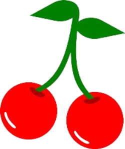

Meggynapok
A falunapot és a feketicsi meggyet június második hétvégéjén ünneplik a bácsfeketehegyiek. Az első Meggynapokat 2004-ben szervezte meg a Zöld Dombok közösség- és környezetfejlesztési szervezet, az első Falunapot pedig 2005-ben a Helyi Közösség. A két rendezvény ettől kezdve egybeforrt, és mára már a település minden intézménye és szervezete bekapcsolódik az eseménybe.Hogy miért június elején? Mert 1785-ben az év ezen időszakában anyakönyvezték az első bácsfeketehegyi újszülöttet, valamint ilyenkor érik a meggy is. A különleges feketicsi meggy, amely a biotermesztésre rendkívül alkalmas, növényvédő permetezés nélkül termeszthető, a gyümölcse pedig nagyon értékes. A prima néven elfogadott meggyfajta abban is különleges, hogy az egyetlen olyan hivatalosan elismert gyümölcsfajta Szerbiában, amelynek nem valamelyik tudományos kutatóintézet, hanem egy civil szervezet a tulajdonosa (a helyi Gazdakör Mezőgazdászok Egyesülete).A falunap dátumának meghatározásakor a Helyi közösség Tanácsa egyhangúlag úgy döntött, hogy falunapként június második hétvégéje, mint a feketicsi meggy ünnepnapja, minden itt élő nemzet számára elfogadható. Hiszen elvileg mindenki utcájában, háza előtt van meggyfa, és a lakosság döntő többsége, ha a meggyszedést nem is, de a meggyből készült termékeket igencsak kedveli. A rendezvénysorozat hagyományos elemei a termékbemutatók és -kóstolók, kiállítások, a meggyel kapcsolatos szakmai programok, a főzőverseny, különböző kulturális- és gyermekprogramok, szórakozási lehetőségek, utcabál és tüzijáték. 2016-ban az alábbiakat nyilatkozta Bojtos Béla, bácsfeketehegyi tanácselnök: „A fiatalok találták ki a meggynapot, és azóta is köszönetet mondok nekik, mert másként látták a világot, mint mi idősebbek és hála Istennek, hogy így van. Hogy a falunap és a meggynap össze van kapcsolva, az azért jó, mert akkor mindenki otthon érzi magát a meggyben is, a faluban is.”
